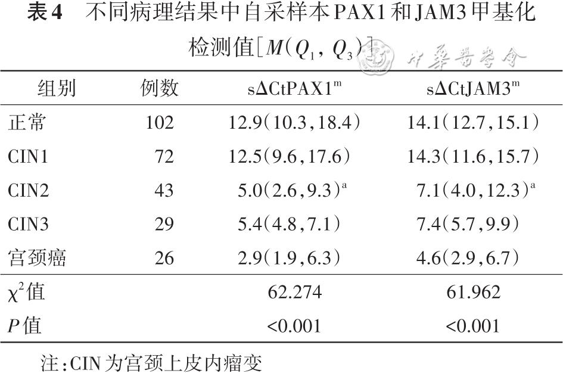

1Background & Objective
- Access: self-sampling removes barriers (privacy, distance) — key for screening coverage.
- Validate: is vaginal self-sample PAX1/JAM3 methylation as accurate as clinician sampling?
2Study Design & Cohort
272
women analyzed
81
consistency group
191
clinical group
- Design: single-center cross-sectional, colposcopy clinic, Jan–Nov 2023.
- Paired samples: vaginal self-swab + clinician sampling, same qPCR methylation.
- Reference: histopathology; Spearman, Kappa, Bland-Altman.
- Histology: normal/cervicitis 37.5% · CIN1 26.4% · CIN2 15.8% · CIN3 10.7% · cancer 9.6%.
102
normal / cervicitis
72
CIN1
43
CIN2
29
CIN3
26
cancer
- Inclusion: colposcopy-referred women with both self & clinician samples.
- Assay: CISCER® PAX1/JAM3 kit (PCR-fluorescence); SLAN-96S.
- Statistics: Spearman, Kappa, Bland-Altman, ROC/AUC, logistic.
- Stratification: pre- vs post-menopausal performance.
- Consistency arm: 81 paired samples (41 <CIN2 + 40 CIN2+).
- Clinical arm: 191 women for performance vs HPV & cytology.
- Sample size: RMLE-based non-inferiority, ≥34 CIN2+.
- Compare: self-sample methylation vs HPV & LBC and combinations.
- Ethics: institutional approval; informed consent.
Menopausal stratification also analyzed for self-sample performance.
3Sampling Consistency
0.90
Kappa · all
0.84
Kappa · CIN2+
0.72
Kappa · <CIN2
- Agreement: Bland-Altman confirms good concordance; P all >0.05.
- No bias: self vs clinician Se 77.5% vs 82.5% · Sp 92.7% vs 87.8% — no significant difference.
4Methylation Signal by Grade

Fig. Self-sample ΔCP by grade — CIN2+ significantly different from normal (P<0.05).
Fig. CIN3+ sensitivity — methylation combination 96.0% best.
5Clinical Performance
77.6%
Se · CIN2+
87.2%
Sp · CIN2+
89.9%
NPV · CIN2+
96.0%
Se · CIN3+ (combo)
- Combined: methylation + HPV16/18 → Se 89.7% (CIN2+) / 96.0% (CIN3+) — beats hrHPV 92.0% & cytology 82.6%.
- Specificity & PPV: methylation alone/combined higher than hrHPV, HPV16/18 & cytology (P<0.005).
- Feasible: home self-swab — expands screening access & compliance.